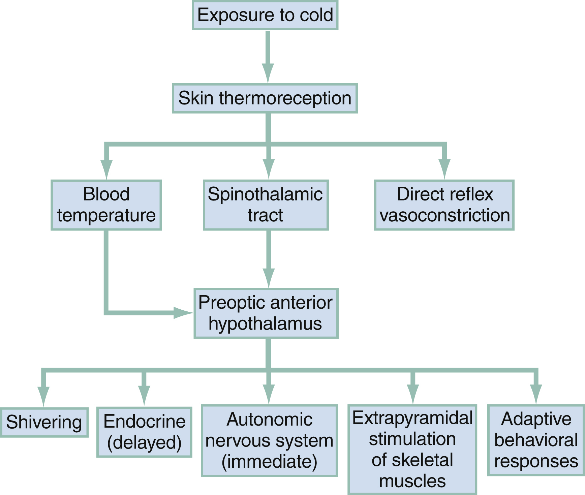
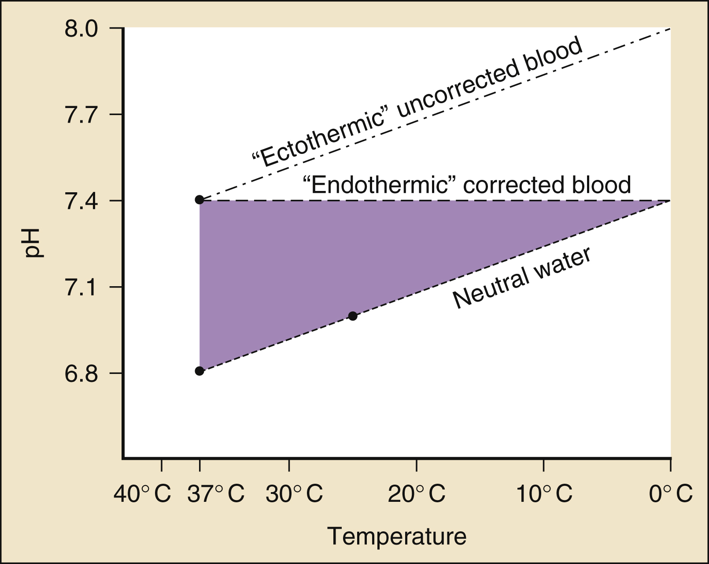
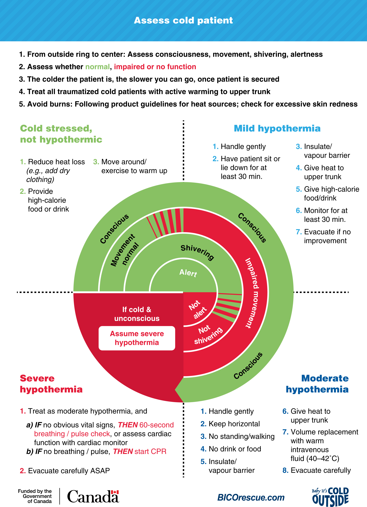

KEY CONCEPTS
- Patients with hypothermia should be actively rewarmed whenever possible. Specific indications for active rather than passive rewarming include trauma, cardiovascular instability, temperature below 32°C (89.6°F), poor rate of passive rewarming, and endocrine insufficiency.
- Rewarming methods should be chosen to minimize core temperature afterdrop.
- If tachycardia is out of proportion to core temperature, then hypoglycemia, hypovolemia, or an overdose should be considered.
- The effects of most medications are temperature dependent. Overmedication to achieve an effect when the patient is cold could cause toxicity during rewarming.
- Laboratory coagulation tests are performed at 37°C (98.6°F). Despite clinically obvious coagulopathy, measures of coagulation will be deceptively normal. Treatment for coagulopathy is to rewarm the patient.
- There are no safe predictors of serum electrolyte levels. Hypothermia enhances the cardiac toxicity of hyperkalemia and obscures premonitory electrocardiographic changes.
- Failure to rewarm despite good technique should suggest infection, endocrine insufficiency, or a futile resuscitation.
Foundations
Background and Importance
Reported reanimations of profoundly cold victims in prolonged cardiac arrest and the emergence of targeted temperature management (formerly called “therapeutic hypothermia”) after cardiac arrest have made hypothermia a compelling topic. The lowest recorded core temperature in accidental hypothermia with successful resuscitation in an adult is 13.7°C (56.7°F) in a 29-year-old Norwegian physician. Cardiopulmonary resuscitation was initiated at the scene. The 9-hour resuscitation included 179 minutes of cardiopulmonary bypass. The lowest recorded core temperature with successful resuscitation in a child is 11.8°C in a 2-year-old boy who had an unwitnessed cardiac arrest. CPR was administered for 135 minutes. He was weaned off ECMO after 22 hours.1 Profoundly cold patients have been resuscitated with full neurologic recovery after CPR for as long as 9 hours.2 The lowest possible temperature with neurologically intact survival in accidental hypothermia is not known. The lowest temperature in a survivor of induced hypothermia was long considered to be 9°C (48.2°F). Recently rediscovered journal articles from the early 1960s document survival after much lower induced core temperatures, as low as 4°C (39.2°F) measured using esophageal probes.
The treatment of accidental hypothermia has been controversial throughout history. The Bible recounts the truncal rewarming of King David by a damsel. Various remedies, including rubbing extremities with hot oil, were mentioned by Hippocrates, Aristotle, and Galen.
Cold weather has had a major impact on military history. Hannibal lost nearly half of his army of 46,000 while traversing the Alps in 218 bce . The winter of 1777 took its toll on Washington’s troops at Valley Forge. Napoleon’s chief surgeon, Baron Larrey, reported that only 350 of the 12,000 men in the 12th division survived the cold during their retreat from Russia in 1812. Those soldiers who were rapidly rewarmed closest to the campfire died. Many lessons were relearned during World Wars I and II when pilots and U-boat crews perished in the cold waters of the North Atlantic.
Cold-related tragedies also affect civilians, including hunters, skiers, climbers, boaters, swimmers, and survivors of natural disasters. Hypothermia can occur in a wide range of climates and seasons. Large numbers of cases occur in urban settings. Indoor hypothermia in elderly patients is an increasing problem.3 Primary hypothermia fatalities can be classified as accidental, homicidal, or suicidal. Death certificate data have underreported mortality from secondary hypothermia, in which cold complicates systemic diseases. As a result, the overall impact of cold on mortality from cardiovascular and neurologic disorders is greatly underestimated.
Anatomy, Physiology, and Pathophysiology
Hypothermia is defined as a core temperature below 35°C (95°F). Many variables contribute to the development of accidental hypothermia. Exposure, old age, poor health, inadequate nutrition, and various medications and intoxicants can decrease heat production, increase heat loss, or interfere with thermoregulation. Compensatory responses to heat loss through conduction, convection, radiation, and evaporation are often overwhelmed by exposure, even in healthy persons. Medications and central nervous system problems can also interfere with thermoregulation.
Temperature Regulation
Human basal heat production increases with ingestion of food or calorie containing fluids, muscle activity, fever, and acute cold exposure. Cold stress increases preshivering muscle tone, potentially doubling heat production. Maximal heat production, primarily due to shivering, lasts only a few hours because of fatigue and glycogen depletion.
Shivering thermogenesis increases the basal metabolic rate up to five times, markedly increasing oxygen consumption. Shivering begins at a normal core temperature when the skin is cooled. Shivering intensity is modulated by the posterior hypothalamus and the spinal cord. The preoptic anterior hypothalamus orchestrates nonshivering heat conservation and dissipation. Heat loss occurs by radiation, conduction, convection, respiration, and evaporation. The most common causes of accidental hypothermia are convective heat loss to cold air and conduction and convection in cold water. Heat loss increases up to five times in wet clothing. Conduction and convection in cold water can increase heat loss by a factor of 25.
Individuals with greater amounts of subcutaneous fat lose heat more slowly than thin people. Convective losses increase with shivering. Respiration and evaporation cause heat loss in the warming of inspired air and by insensible evaporation from the skin and lungs.
Cutaneous and respiratory heat losses are markedly influenced by the ambient temperature, air motion, and relative humidity. Greater losses occur in cool, dry, windy environments. When there is no sweating, most heat loss is through radiation and convection. Convective losses are significant in immersion-induced hypothermia. Children cool faster than adults because they have higher ratios of surface area to mass. Chronic cold exposure may result in thermal acclimatization (Fig. 1).

Fig. 1
Physiology of cold exposure.
When the core temperature ranges from 37°C to 30°C (98.6°F to 86°F), vasoconstriction, shivering, and nonshivering basal and endocrine thermogenesis generate heat. From 30°C to 24°C (86°F to 75.2°F), the basal metabolic rate decreases, and shivering is absent. At temperatures below 24°C (75.2°F), autonomic and endocrine mechanisms for heat conservation become inactive. The pathophysiologic characteristics of hypothermia are described in Table 1 .
| State |
Core Temperature °C (°F) |
Characteristics |
Cold-stressed
Mild |
37–35 (98.6–95) |
|
| 35 (95) |
Shivering and increased metabolism
Increased shivering thermogenesis; increase in metabolic rate |
| 34 (93.2) |
Normal blood pressure; maximum respiratory stimulation; ataxia, and apathy |
| 33 (91.4) |
Amnesia |
| Moderate |
32 (89.6) |
Stupor; 25% decrease in oxygen consumption |
| 31 (87.8) |
Increased shivering thermogenesis |
| 30 (86) |
Atrial fibrillation and other dysrhythmias; poikilothermia; pulse and cardiac output two-thirds normal; insulin ineffective; Progressive decrease in level of consciousness; loss of consciousness can be seen |
| 29 (85.2) |
Progressive decrease in pulse, and respiration; pupils dilated |
| 28 (82.4) |
Ventricular fibrillation susceptibility; 50% decrease in oxygen consumption and pulse |
| Severe |
27 (80.6) |
Loss of reflexes |
| 26 (78.8) |
Major acid-base disturbances; no reflexes or response to pain |
| 25 (77) |
Cerebral blood flow one-third normal; cardiac output 45% normal; pulmonary edema may develop |
| 23 (73.4) |
No corneal or oculocephalic reflexes |
| 22 (71.6) |
Maximum risk of ventricular fibrillation; 75% decrease in oxygen consumption |
| 20 (68) |
Lowest resumption of cardiac electromechanical activity; pulse 20% of normal |
| 19 (66.2) |
Flat electroencephalogram |
| 13.7 (56.7) |
Lowest accidental hypothermia survival in an adult |
| 11.8 (53.2) |
Lowest accidental hypothermia survival in a child |
| 4.2 (39.6) |
Lowest therapeutic hypothermia survivor |
Cardiovascular System
Initial tachycardia is followed by progressive bradycardia, although periods of tachycardia sometimes occur. The pulse decreases by 50% at 28°C (82.4°F). If the degree of tachycardia is inconsistent with the core temperature, consider associated conditions such as hypoglycemia, drug ingestion, and hypovolemia.
The bradycardia of hypothermia results from decreased spontaneous depolarization of cardiac pacemaker cells and is refractory to atropine. The electrocardiographic features of hypothermia include the Osborn (J) wave seen at the junction of the QRS complex and ST segment with core temperatures below 32°C (89.6°F; Fig. 2). J waves are neither unique to hypothermia nor of any prognostic value. J waves are normally upright in aVL, aVF, and the left precordial leads. J waves can also be seen during local cardiac ischemia, with sepsis or CNS lesions, and hypercalcemia. J waves may resemble myocardial injury current and may not be recognized by ECG computer interpretations. This can result in misguided thrombolysis, which could exacerbate preexistent coagulopathies. Hypothermia can also cause electrocardiographic changes that mimic Brugada syndrome.

Fig. 2
Hypothermic J waves.
Atrial and ventricular dysrhythmias are common in moderate or severe hypothermia. Because the conduction system is more sensitive to the cold than the myocardium, cardiac cycle prolongation occurs. As hypothermia worsens, the PR interval, then the QRS interval, and finally the QTc interval become prolonged. Even in the absence of shivering, increased muscle tone may obscure P waves or produce artifacts. Atrial fibrillation is common when the core temperature is below 32°C (89.6°F). Sinus atrial or junctional rhythms also occur. Atrial fibrillation usually converts spontaneously during rewarming, but mesenteric embolization is a hazard. Ventricular fibrillation (VF) may be caused by tissue hypoxia, physical jostling, electrophysiologic or acid-base disturbances, or autonomic dysfunction. Asystole and VF can occur spontaneously when the core temperature falls below 25°C (77°F), but vital signs may persist well below 24°C (75.2°F).
The term core temperature afterdrop refers to a decrease in an individual’s core temperature after removal from the cold. Temperature equilibration by conduction of heat from the core to the cooler peripheral tissue contributes to afterdrop, but countercurrent cooling of blood perfusing cold tissues in the periphery before returning to the warmer core results in a greater decrease in the core temperature. Active external rewarming of the extremities abolishes peripheral vasoconstriction and reverses arteriovenous shunting. In one human experiment, cooling followed by immersion in a warm bath produced a 30% fall in mean arterial pressure, with a 50% decrease in peripheral vascular resistance.
Core temperature afterdrop is clinically relevant in the treatment of patients with large temperature gradients between the core and periphery. Large afterdrops can occur in severely hypothermic patients if frostbitten extremities are thawed before the core is rewarmed.
Central Nervous System
Hypothermia progressively depresses the CNS. Significant alteration of brain electrical activity begins below about 33.5°C (92.3°F). The electroencephalogram becomes silent at about 19°C to 20°C (66.2°F to 68°F). Cerebral autoregulation is maintained with an increase in vascular resistance until about 25°C (77°F). In severe hypothermia, there is a redistribution of blood flow to the brain. Like the heart, the brain has a critical period of tolerance to hypothermia.
Renal System
Exposure to cold induces diuresis, regardless of the state of hydration. The kidneys excrete a large amount of dilute urine that is essentially glomerular filtrate and does not clear nitrogenous waste products. Severe hypothermia causes relative central hypervolemia due to peripheral vasoconstriction. Cold diuresis may act as a volume regulator to diminish the capacitance vessel overload. Cold water immersion can further increase urinary output by 3.5 times.
Respiratory System
Hypothermia initially stimulates respiration, followed by a progressive decrease in the respiratory minute volume. Carbon dioxide production decreases 50% with an 8°C (14.4°F) decrease in temperature. Stimuli for respiratory control are altered in severe hypothermia and carbon dioxide retention with respiratory acidosis can occur. Hypercapnia increases core temperature cooling during snow burial. Other pathophysiologic factors that adversely affect the respiratory system include viscous bronchorrhea, decreased ciliary motility, and noncardiogenic pulmonary edema.
Predisposing Factors
Factors that predispose to hypothermia include decreased heat production, increased heat loss, and impaired thermoregulation (Box 1). Hypothermia can occur even in warm conditions.
Box 1
Factors Predisposing to Hypothermia
- Decreased Heat Production
- Endocrine failure
- Hypopituitarism
- Hypothyroidism
- Diabetes
- Insufficient fuel
- Hypoglycemia
- Malnutrition
- Marasmus
- Kwashiorkor
- Extreme exertion
- Neuromuscular inefficiency
- Age extremes
- Impaired shivering
- Inactivity
- Lack of adaptation
- Increased Heat Loss
- Environmental
- Immersion
- Nonimmersion
- Induced vasodilation
- Pharmacologic
- Toxicologic
- Erythrodermas
- Burns
- Psoriasis
- Ichthyosis
- Exfoliative dermatitis
- Iatrogenic
- Emergency deliveries
- Cold infusions
- Heatstroke treatment
- Impaired Thermoregulation
- Peripheral failure
- Neuropathy
- Acute spinal cord transection
- Diabetes
- Central neurologic failure
- Central nervous system trauma
- Cerebrovascular accident
- Toxicologic
- Metabolic
- Subarachnoid hemorrhage
- Pharmacologic
- Hypothalamic dysfunction
- Parkinson disease
- Anorexia nervosa
- Cerebellar lesion
- Neoplasm
- Congenital intracranial anomalies
- Multiple sclerosis
- Miscellaneous Associated Clinical States
- Recurrent hypothermia
- Episodic hypothermia
- Sepsis
- Pancreatitis
- Carcinomatosis
- Cardiopulmonary disease
- Vascular insufficiency
- Uremia
- Paget’s disease
- Giant cell arteritis
- Sarcoidosis
- Shaken baby syndrome
- Multisystem trauma
- Shapiro’s syndrome
- Wernicke-Korsakoff syndrome
- Hodgkin disease
Decreased Heat Production
Decreased thermogenesis may be due to endocrine dysfunction, such as hypopituitarism, hypoadrenalism, or myxedema. Myxedema coma is several times more common in women and up to 80% of women with myxedema coma are hypothermic. Hypothyroidism is often occult, with no history of lassitude, dry skin, arthralgias, or cold intolerance. Hypoglycemia can predispose to hypothermia. Another cause of decreased heat production is malnutrition, with a decrease in subcutaneous fat. Severe malnutrition with wasting contributes to heat loss. Kwashiorkor is less of a risk due to the insulating effect of hypoproteinemic edema.
Neonates are at particular risk of hypothermia due to large surface area–to–mass ratio, relatively little subcutaneous tissue, and inefficient shivering. Additionally, neonates do not have behavioral defense mechanisms. Acute neonatal hypothermia is common after emergency delivery or resuscitation and has also been reported after abandonment of infants. Hypothermic neonates are lethargic, fail to thrive, and have a weak cry. Many have paradoxically rosy cheeks. Hypothermia that occurs after 72 hours of life is often due to septicemia. Hypothermia can occur in shaken baby syndrome and may be a factor in some cases of sudden infant death syndrome.
Most older adults are capable of normal thermoregulation, but conditions such as immobility and systemic disease may interfere with heat production and conservation. Geriatric autonomic dysfunction may cause an inability to sense cold, abnormal adaptive behavioral responses, and decreased peripheral blood flow.
Increased Heat Loss
Patients with erythrodermas, such as psoriasis, exfoliative dermatitis, ichthyosis, eczema, and burns, can have increased peripheral blood flow. Iatrogenic causes of heat loss include exposure during resuscitation, cold or room temperature infusions, overcooling of patients with heatstroke, and overzealous burn treatment.
Ethanol is metabolized slowly in hypothermia and interacts with thermoregulatory neurotransmitters. Ethanol may directly suppress the activity of the posterior hypothalamus and mammillary bodies. Cutaneous heat loss increases through vasodilation and shivering thermogenesis is decreased. Ethanol is the most common cause of excessive heat loss in urban settings. Aging is associated with an increased sensitivity to the hypothermic actions of ethanol. Intoxicated persons may be incapable of adaptive behavior to avoid cold and can be impaired by hypothermic alcoholic ketoacidosis.
Impaired Thermoregulation
Thermoregulation can be impaired centrally, peripherally, or metabolically. Skull fractures, particularly basilar fractures, and chronic subdural hematomas are associated with central impairment. Other causes include strokes, neoplasms, anorexia nervosa, and Hodgkin and Parkinson diseases. The final common pathway in these disorders may be centrally mediated vasodilation. Cerebellar lesions can produce choreiform inefficient shivering.
In therapeutic or toxic doses, antidepressants, mood stabilizers, antipsychotics, anxiolytics, and general anesthetics interfere with thermoregulation by impairing centrally mediated vasoconstriction. Other overdoses, including by organophosphates, opioids, sedative hypnotics, barbiturates, and carbon monoxide, predispose to hypothermia.
Peripheral thermoregulatory failure occurs in neurogenic shock after acute spinal cord transection. In spinal cord injury, disruption of the autonomic nervous system eliminates vasoconstriction. The patient effectively becomes poikilothermic and can rapidly become hypothermic. Neuropathies and diabetes are also peripheral causes of heat loss. Abnormal plasma osmolality may cause hypothalamic dysfunction in uremia, lactic acidosis, diabetic ketoacidosis, and hypoglycemia.
Trauma
After trauma, hypotension, immobility in a cold environment, and hypovolemia predispose to hypothermia. In patients with major injuries, shivering is decreased or absent, causing skin and core temperatures to fall. Thermoregulation is impaired, and heat production decreases.
Hypothermia may exacerbate blood loss by inducing coagulopathy due to impaired activity of coagulation factors and enhanced plasma fibrinolytic activity, with decreased function and sequestration of platelets. Hypothermia in trauma is a risk factor for multiorgan dysfunction. Traumatic injuries may be missed if hypotension or neurologic findings such as areflexia or paralysis are misattributed to hypothermia. Major risk factors for hypothermia in trauma patients include extremes of age, severe injury, intoxication, large transfusion requirements, and prolonged field, emergency department (ED), and operating room times.
Hypothermia can protect the brain from ischemia only when induced before shock develops. This reduces adenosine triphosphate (ATP) use while ATP stores are nearly normal. In trauma patients, ATP stores are already depleted.
Clinical Features
Appreciation of subtle presentations facilitates the early diagnosis of mild to moderate hypothermia. Vague symptoms include hunger, nausea, confusion, dizziness, chills, pruritus, and dyspnea (Box 2). During outdoor activities, individuals may simply become uncooperative, uncoordinated, moody, or apathetic. Indoors, older patients may exhibit confusion or become less communicative and may display lassitude or a flat affect. Progression of mental deterioration or motor skill impairment may mimic dementia. Symptoms such as slurred speech and ataxia may resemble symptoms of stroke or intoxication. Some older adults have a decreased ability to sense cold and fail to take adaptive action.
Box 2
Presenting Signs of Hypothermia
- Head, Eye, Ear, Nose, Throat
- Mydriasis
- Decreased corneal reflexes
- Extraocular muscle abnormalities
- Erythropsia (altered color perception)
- Flushing
- Facial edema
- Epistaxis
- Rhinorrhea
- Strabismus
- Cardiovascular
- Initial tachycardia
- Subsequent bradycardia
- Dysrhythmias
- Decreased heart tones
- Hepatojugular reflux
- Jugular venous distention
- Hypotension
- Respiratory
- Initial tachypnea
- Adventitious sounds
- Bronchorrhea
- Progressive hypoventilation
- Apnea
- Gastrointestinal
- Ileus
- Constipation
- Abdominal distention or rigidity
- Poor rectal tone
- Gastric dilation in neonates or in adults with myxedema
- Genitourinary
- Anuria
- Oliguria
- Polyuria
- Testicular torsion
- Neurologic
- Depressed level of consciousness
- Ataxia
- Hypesthesia
- Dysarthria
- Antinociception
- Amnesia
- Initial hyperreflexia
- Anesthesia
- Hyporeflexia
- Areflexia
- Central pontine myelinolysis
- Psychiatric
- Impaired judgment
- Perseveration
- Mood changes
- Flat affect
- Altered mental status
- Paradoxical undressing
- Neuroses
- Psychoses
- Suicide
- Organic brain syndrome
- Musculoskeletal
- Increased muscle tone
- Shivering
- Rigidity or pseudo–rigor mortis
- Paravertebral spasm
- Opisthotonos
- Compartment syndrome
- Dermatologic
- Erythema
- Pernio
- Pallor
- Frostnip
- Cyanosis
- Frostbite
- Icterus
- Popsicle panniculitis (inflammation of the cheeks; also called “cold panniculitis”)
- Sclerema (hardening of subcutaneous tissue)
- Cold urticaria
- Ecchymosis
- Necrosis
- Edema
- Gangrene
Paradoxical undressing has been widely reported in hypothermic patients. This final preterminal effort may be related to peripheral vasoconstrictive changes of hypothermia. Hypothermic patients who have paradoxically undressed have been mistaken for victims of sexual assault or thought to have a psychiatric disorder. In urban settings, hypothermia is most commonly associated with alcohol consumption or underlying illness. Other causes include stroke, drug overdose, psychiatric emergency, and major trauma.
Neurologic manifestations vary widely. A progressive decrease in the level of consciousness is usually proportional to the degree of hypothermia. Some patients, however, continue to be verbally responsive and display intact reflexes at 27°C to 25°C (80.6°F to 77°F).
Eye movement abnormalities and extensor plantar responses do not correlate directly with the degree of hypothermia. Cranial nerve signs may be seen with bulbar damage from central pontine myelinolysis. Above 22°C (71.6°F), it should be assumed that nonreactive dilated pupils reflect inadequate tissue perfusion rather than hypothermia.
Neuromuscular examination may reveal stiff posture, pseudo–rigor mortis, or opisthotonos. Reflexes are usually hyperactive to 32°C (89.6°F) and then become hypoactive, disappearing around 26°C (78.8°F). Cremasteric reflexes are absent because the testicles are already retracted. The plantar response usually remains flexor until 26°C (78.8°F). The knee jerk reflex is the last reflex to disappear and the first to reappear with rewarming. Diagnosis of CNS disorders, including spinal cord lesions, may be obscured by hypothermia. From 30°C to 26°C (86°F to 78.8°F), both contraction and relaxation phases of the reflexes are equally prolonged. If intact, the ankle jerk is helpful to diagnose hypothermic myxedema. Myxedema characteristically prolongs the relaxation phase more than the contraction phase.
Psychiatric disorders do not improve when the patient is cold. Mental status alterations can include anxiety, perseveration, neurosis, and psychosis. Individuals who are functional in warm conditions may decompensate in cold weather. Hypothermia-induced psychiatric presentations and suicide attempts are commonly misdiagnosed.
Differential Diagnoses
The differential diagnosis of hypothermia is broad and includes hypothyroidism, hypopituitarism, diabetes, hypoglycemia, malnutrition, intracranial and spinal cord injuries, and sedative-hypnotic and alcohol intoxication (see Box 1). Hypothermia is also common in patients with Wernicke encephalopathy. Hypothermia can mask the usual clinical triad of ophthalmoplegia, confusion, and truncal ataxia. Intravenous thiamine can be diagnostic and therapeutic.
Hypothermia occurs in conjunction with infections, most commonly overwhelming gram-negative sepsis, pneumonia, meningitis, and encephalitis. Other infections that can lead to hypothermia include bacterial endocarditis, brucellosis, malaria, syphilis, typhoid, miliary tuberculosis, and trypanosomiasis.
Medical conditions associated with hypothermia include carcinoma, pancreatitis, peritonitis, and cerebrovascular disease. Low cardiac output resulting from myocardial infarction can induce hypothermia. Fetal and maternal bradycardia and hypothermia may result from magnesium sulfate infusion during preterm labor. Hypothermia can cause delayed recovery from neuromuscular blockade. Although many conditions can cause or be associated with accidental hypothermia, there is no true differential diagnosis of accidental hypothermia once the diagnosis has been established by core temperature measurement.
Diagnostic Testing
Except in mild cases of hypothermia, initial laboratory evaluation should include glucose level, complete blood cell count, comprehensive metabolic panel, serum lipase level, and coagulation studies. Blood urea nitrogen and creatinine levels should be checked because renal failure may occur after rewarming in patients with chronic hypothermia. Arterial or venous blood gases, if obtained, should not be temperature-corrected. A serum ethanol level and urine toxicology screen may be helpful based on history or when a depressed level of consciousness is inconsistent with the degree of hypothermia. Thyroid function studies, cardiac markers, and serum cortisol levels may also be indicated.
Acid-Base Balance
Blood gas analyzers warm blood to 37°C (98.6°F), increasing the partial pressure of dissolved gases. This results in arterial blood gases with higher oxygen and carbon dioxide and lower pH than in vivo values. Attempting to maintain a corrected pH at 7.4 and arterial partial pressure of carbon dioxide (PaCO2) at 40 mm Hg during hypothermia depresses cerebral and coronary blood flow and cardiac output and increases the incidence of VF. The ideal acid-base goal is an uncorrected pH of 7.4 and PaCO2 of 40 mm Hg.
Cold blood buffers poorly. In normothermia, pH decreases by 0.08 unit for every 10-mm Hg increase in PaCO2. At 28°C (82.4°F), the decrease in pH doubles. Because the neutral point of water at 37°C (98.6°F) is a pH of 6.8, the normal 0.6-unit pH offset between blood and intracellular water should be maintained at all temperatures (Fig. 3). Intracellular electrochemical neutrality ensures optimal enzymatic function at all temperatures. Relative alkalinity affords myocardial protection and improves the heart’s electrical stability.

Fig. 3
Neutrality reflects the pH of water at any given temperature. The pH of water is 6.8 at 37°C (98.6°F) and 7.0 at 25°C (78.8°F). The physiologically ideal intracellular-to-extracellular, 0.6-unit pH offset will be maintained if the arterial pH is kept at 7.42, uncorrected for temperature.
Hematologic Evaluation
The hematocrit can be deceptively high due to decreased plasma volume. The hematocrit increases 2% for every 1°C (1.8°F) fall in temperature. A low-normal hematocrit level in a moderately to severely hypothermic patient should suggest acute or chronic blood loss.
Splenic, hepatic, and splanchnic sequestration in hypothermia decreases leukocyte and platelet counts. As in normothermia, a normal white blood cell count does not exclude infection, especially if the patient is debilitated, alcoholic, myxedematous, or at either extreme of age.
Frequent evaluation of serum electrolyte levels during rewarming is essential. There are no safe predictors of values or trends. Changes occur in membrane permeability and in the sodium-potassium pump. The patient’s preexisting physiologic status, severity and chronicity of hypothermia, and method of rewarming alter the serum electrolyte values.
The plasma potassium level is independent of hypothermia. Hyperkalemia can be associated with metabolic acidosis, rhabdomyolysis, or renal failure. Hypothermia enhances the cardiac toxicity of hyperkalemia and obscures premonitory electrocardiographic changes. Hypokalemia is most common with chronic hypothermia. It results from potassium entering muscle, rather than potassium diuresis. A decline in the serum potassium level despite a decreasing serum pH is caused by intracellular pH fluxes greater than extracellular pH fluxes.
Conditions associated with hypokalemia include preexisting diabetic ketoacidosis, hypopituitarism, inappropriate secretion of antidiuretic hormone, previous diuretic therapy, and alcoholism. If the serum potassium level is less than 3 mEq/L, provide supplementation during rewarming.
Blood urea nitrogen and creatinine levels are elevated with preexisting renal disease or decreased clearance. Because of hypothermic fluid shifts, hematocrit and blood urea nitrogen levels are poor indicators of actual fluid status.
The blood glucose level may provide a subtle clue to the chronicity of hypothermia. Acute hypothermia initially elevates the blood glucose level by catecholamine-induced glycogenolysis, diminished insulin release, and inhibition of cellular membrane glucose carrier systems. Subacute and chronic hypothermia produce glycogen depletion, leading to hypoglycemia. Hypoglycemia can also develop during rewarming in acute hypothermia. Symptoms of hypoglycemia can be masked by hypothermia. A cold-induced renal glycosuria neither implies hyperglycemia nor guarantees normoglycemia.
When hyperglycemia persists during rewarming, suspect hemorrhagic pancreatitis or diabetic ketoacidosis. Actively rewarm patients with diabetic ketoacidosis past 30°C (86°F) because insulin is ineffective below 30°C (86°F). Correction of hypoglycemia corrects the level of consciousness only to the level consistent with the degree of hypothermia.
Severe hypothermia also causes serum enzyme level elevation because of the ultrastructural cellular damage. Rhabdomyolysis is commonly associated with cold exposure. Ischemic pancreatitis may result from the microcirculatory shock of hypothermia. Decreased pancreatic blood flow then activates proteolytic enzymes, increasing the serum lipase level.
Hypothermic Coagulation
A physiologic hypercoagulable state can occur with hypothermia and can be associated with a disseminated intravascular coagulation (DIC)–type syndrome. The cause may be catecholamine or steroid release, circulatory collapse, or release of tissue thromboplastin from cold, ischemic tissue.
Coagulopathies also occur because the enzymatic activity of the activated clotting factors is depressed by the cold. Clotting prolongation is proportional to the number of steps in the cascade. Because kinetic tests of coagulation are performed in the laboratory at 37°C (98.6°F), there is a disparity between clinically evident coagulopathy in vivo and deceptively normal prothrombin times, partial thromboplastin times, and international normalized ratios reported by the laboratory. The only effective treatment is rewarming, not administration of clotting factors.
Leukopenia and thrombocytopenia usually reverse with rewarming. Clinically significant coagulopathies can still occur, particularly in association with trauma and volume resuscitation. Cold-induced thrombocytopenia may be from direct bone marrow suppression or from splenic and hepatic sequestration. Platelet thromboxane B2 production is also temperature dependent, which can result in decreased platelet function and adhesion.
Elevated blood viscosity seen in hypothermia may be exacerbated in patients with cryoglobulinemia or cryofibrinogenemia, especially in older patients. Cryofibrinogen, a cold-precipitated fibrinogen, is associated with collagen vascular diseases, carcinomas, and coliform sepsis. Cold hemagglutination from cold agglutinins produces hemolysis or agglutination with thrombosis, which might explain the increase in coronary and cerebral thromboses in winter.
Imaging
If the patient is not alert and there is suspicion of trauma, standard trauma imaging is indicated, including an extended focused assessment with sonography in trauma (eFAST) and computed tomography (CT) scan of the head. CT scanning of the abdomen and pelvis may show pancreatic calcifications, unsuspected pneumoperitoneum, small bowel dilation from hypothermia-induced mesenteric vascular occlusion, or colonic dilation associated with myxedema coma.
Management
General Measures
Patients who are cold, stiff, and cyanotic, with fixed pupils, inaudible heart tones, and no visible thoracic excursions, can still be successfully resuscitated. Unexpectedly, a few patients have revived in the morgue while awaiting autopsy.
Pertinent history includes information about preexisting cardiac, pulmonary, neurologic, or endocrine disease. The duration of exposure, outdoor conditions, circumstances of discovery, associated injuries, and predisposing conditions should be documented. Initial management should emphasize prevention of further heat loss. Specific goals of prehospital care include adequate insulation, avoidance of core afterdrop, gentle handling, and transport in a horizontal position.4 Hypothermic patients should be actively rewarmed in the field, if possible.4 A graphic flowchart to assist with clinical staging of hypothermia and to guide treatment is available as a “cold card” (Fig. 4).5

Fig. 4
“Cold card” for treatment of cold patients.
A patient who is unresponsive and not shivering should be treated for severe hypothermia. At core temperatures below 32°C (89.6°F), expect an irritable myocardium, a large temperature gradient between the core and periphery, and relative hypovolemia.
In the ED, hypothermia should be confirmed and monitored with continuous core temperature evaluation. Clinically, the rectal temperature is most widely used. However, it lags behind core temperature changes and is influenced by lower extremity temperatures and probe placement. The probe should be inserted to 15 cm and not placed into cold feces. Epitympanic temperature equilibrates rapidly with core temperature and is closest to the hypothalamic temperature. Most epitympanic probes are not suitable for field use.4 Infrared thermography (tympanic temperature) is too unreliable be used, except to exclude hypothermia. So-called temporal artery thermometers are often random number generators and unreliable for clinical use. If the airway is protected, an esophageal probe placed in the lower third of the esophagus, an average of 24 cm below the larynx in adults, is the ideal method for continuous core temperature monitoring. If the probe is placed higher, the reading can be falsely elevated by inhalation of heated oxygen. An esophageal probe without markings can have tape placed on the proximal part to mark the correct depth of insertion.
Hand-held Doppler may be useful to establish the presence of a spontaneous pulse. Bedside echocardiography should precede chest compressions. Pulse oximetry is usually unreliable in hypothermia with peripheral vasoconstriction. It is often not possible to obtain an accurate reading. End-tidal carbon dioxide measurements accurately assess tissue perfusion and tracheal tube placement, but only at normal temperatures. Commercially available devices do not function when humidified air is used for airway rewarming. Endotracheal intubation or placement of a supraglottic airway may be indicated unless the patient has intact protective airway reflexes. Cold depression of ciliary activity allows for the accumulation of secretions with frothy sputum and chest congestion. It may be hard to differentiate between bronchorrhea and pulmonary edema. Fiberoptic or blind nasotracheal intubation can be useful to avoid a surgical airway when cold-induced trismus is present.
Dysrhythmias during intubation are rare. These may be due to failure to preoxygenate, mechanical jostling, acid-base changes, and electrolyte level fluctuations. A nasogastric tube is indicated after endotracheal intubation because decreased gastric motility and gastric dilation are common. Physical examination of the abdomen is unreliable because cold can induce rectus muscle rigidity. Many moderately and severely hypothermic patients have decreased or absent bowel sounds. It is important to evaluate the patient for an associated ileus, pancreatitis, or occult trauma.
In moderate and severe hypothermia, indwelling urinary catheters are useful to monitor urine output and help determine the severity of vascular fluid shifts.
Cardiac monitoring should be continuous. If central venous access is required, avoid insertion of the catheter tip into the heart, which can irritate the myocardium and precipitate dysrhythmias. Arterial catheters for continuous monitoring of intra-arterial blood pressure may be helpful in profoundly hypothermic patients. Placement of a pulmonary artery catheter risks perforation of a cold, stiff, pulmonary artery and is not recommended in the emergency department.
Volume Resuscitation
Patients with moderate or severe hypothermia are usually volume depleted. They are prone to thromboembolism resulting from increased viscosity. During rewarming, the total plasma volume is usually high, but the circulatory plasma volume is usually low due to increased peripheral vascular resistance. Rapid volume expansion can be lifesaving, especially in hypothermic neonates. Adult patients with moderate or severe hypothermia should initially receive a 500-mL fluid challenge of warmed normal saline. Avoid lactated Ringers solution because the cold liver metabolizes lactate poorly. Fluids administered via the intravenous (IV) route should be warmed to 40°C to 42°C (104°F to 107.6°F). If a commercial fluid or blood warmer is not available, IV fluids can be heated in a standard microwave. Shake the fluid bag before administration to avoid hot spots. Avoid rapid central venous administration, which may produce myocardial thermal gradients. Another option in vasoconstricted patients is administration via the intraosseous route. Countercurrent heat exchangers effectively heat crystalloids and blood from 10°C to 35°C (50°F to 95°F). There can be significant conductive heat loss through IV tubing, especially with long lengths of tubing at slow flow rates. It is preferable to administer fluids as boluses to effect rather than as drips.
Normally, hypothermia increases natriuresis. Preexisting gastrointestinal losses or previous diuretic treatment can also contribute to sodium loss. Patients with a normal sodium level and osmolality may have preexisting sodium overload as a result of cirrhosis, nephrosis, or congestive heart failure. However, most patients will be free-water depleted, elevating the sodium level and osmolality. Hemoconcentration due to decreased plasma volume, fluid shifts, and increased vascular permeability usually is present. Hemodilution can occur from parenteral crystalloid administration, but a low hematocrit can also result from acute hemorrhage or preexisting anemia.
Advanced Life Support
During hypothermic cardiac arrest, cardiac output and cerebral and myocardial blood flows are much less than those during normothermic closed chest compressions. Metabolic demands, however, are also less during hypothermia.
Blood flow during cardiopulmonary resuscitation (CPR) in patients with hypothermia differs from flow during normothermia. In normothermia, some flow results from phasic alterations in the intrathoracic pressure rather than from direct cardiac compression. In hypothermia, the heart is a passive conduit, and phasic alterations in the intrathoracic pressure are exerted equally on all cardiac chambers. The mitral valve remains patent during systole, and blood continues to circulate through the left side of the heart. This explains an observation of a thoracotomy in a patient who ultimately survived severe hypothermia: “the heart was found to be hard as stone and it is hardly conceivable how effective external cardiac massage could have been.” There have been many neurologically intact survivors after prolonged closed chest compressions.
Chest wall elasticity and pulmonary compliance are decreased with cold. More force is needed to depress the chest wall sufficiently to generate adequate intrathoracic pressure gradients. Powered thoracic compression devices are useful during prolonged resuscitations pending decisions about extracorporeal rewarming.
Apparent rigor mortis and fixed dilated pupils are not reliable criteria for withholding CPR in a hypothermic patient. Accurately diagnosed dependent lividity is a sign of death even in hypothermia, although previous guidelines have stated the contrary. Because intermittent flow may provide adequate support during evacuation, CPR should not be withheld just because continuous compressions cannot be ensured.6
Rescuers should initiate CPR in accidental hypothermia unless do-not-resuscitate status is known, obviously lethal injuries are present, chest wall depression is impossible, signs of life are present, or rescuers are endangered.4 If possible, verify that there is no spontaneous mechanical cardiac activity with bedside ultrasonography before chest compressions are initiated.
Pharmacologic Treatment
The efficacy of most medications is temperature dependent. Protein binding increases during hypothermia. Liver metabolism is decreased. Large doses could be required to achieve a therapeutic response. Toxic levels could develop with rewarming. In severe hypothermia, withhold medications until the patient is warmed, and then leave longer intervals between doses. No medication should be given orally because of the patient’s decreased gastrointestinal motility. Intramuscular medications are also contraindicated because of poor absorption from vasoconstricted sites.
Cardiovascular Medications
The effects of hypothermia on the autonomic nervous system are variable. In primates, sympathetic response increases rapidly to cooling from 37°C to 31°C (98.6°F to 87.8°F) and then switches off at about 29°C (84.2°F). This suggests that modest catecholamine support might be useful below 29°C (84.2°F).
Pharmacologic manipulation of the pulse and blood pressure should be avoided. Epinephrine and other vasoconstrictors may be dysrhythmogenic and have a minimal effect on the maximally constricted peripheral vasculature. There are no clear indications for vasopressors although, in animal models, the return of spontaneous circulation after induced VF below 30°C (86°F) is higher after the administration of vasopressors.
Inotropes are usually not necessary to support blood pressure. Inotropic support may be considered in disproportionately hypotensive patients who do not maintain a mean arterial pressure of 60 mm Hg in response to volume replacement and rewarming.
Atrial dysrhythmias are common below 32°C (89.6°F), associated with a slow ventricular response. Atrial fibrillation is common but self-limited and typically converts spontaneously during rewarming. Beta blockers and calcium channel blockers are contraindicated unless there is a rapid ventricular response.
Preexisting, chronic, premature ventricular contractions can be suppressed during hypothermia and recur during rewarming. Most hypothermia-induced dysrhythmias convert spontaneously during rewarming. Asystole that develops during rewarming is not as ominous as asystole in normothermic patients. For VF, defibrillation should be attempted at the usual energy level. Successful defibrillation has been reported at 20°C (68°F) but attempted defibrillation is often unsuccessful until the core temperature is above 30°C (86°F). If a defibrillation attempt is unsuccessful, active rewarming should be initiated while continuing CPR. Defibrillation can be attempted occasionally during rewarming. Once the core temperature is above 30°C (86°F), further attempts can be made.7
The ideal approach to ventricular dysrhythmias in the hypothermic patient has not been well studied. Lidocaine and propranolol have minimal hemodynamic effects during hypothermia. Their efficacy in the treatment of ventricular dysrhythmias appears limited. In a canine model of severe hypothermic VF, neither amiodarone nor bretylium was effective. Human chemical defibrillations with bretylium tosylate in cases of severe hypothermia have been reported. Recurrent VF was controlled by isoproterenol in one reported case.8 Amiodarone can cause torsades de pointes by QT prolongation and its safety during accidental and induced hypothermia is not known.
In hypothermia, at least one Group 1 antidysrhythmic agent, procainamide, increases the incidence of VF. Another drug in the same group, quinidine, can prevent VF during induced profound hypothermia and during cardiac manipulation at 25°C to 30°C (77°F to 86°F). Transvenous cardiac pacing is hazardous for bradydysrhythmias in hypothermia. External pacing may be worth trying in the rare setting of profoundly disproportionate bradycardia. Transcutaneous pacing has been used to facilitate continuous arteriovenous rewarming in perfusing patients by raising the systolic blood pressure above 60 mm Hg. Other active rewarming techniques do not require specific pressure gradients.
Antibiotics
Hypothermia compromises host defenses and predisposes to infection. In hypothermia, the usual signs of infection, including fever, are absent. Shaking chills from sepsis may be mistaken for shivering. Suspect CNS injury or infection if a patient’s mental status remains altered, despite rewarming.
In hypothermic children younger than 3 months, empirical antibiotics are indicated after cultures have been obtained. There are no reliable clinical or laboratory indicators of infection, but bradycardia, anemia, uremia, and high serum glucose levels, as well as leukocyte abnormalities, are common clues. The role of empirical antibiotics in adults is less clear. Although gram-negative septicemia may cause hypothermia, coexistent infections from gram-positive cocci, Enterobacteriaceae, and oral anaerobes are common.
Older adults with thermoregulatory failure have a high risk of mortality and should be considered septic until proven otherwise. Routine empiric antibiotics are warranted in hypothermia only in geriatric patients. Administer antibiotics if the clinical picture is consistent with septic shock or if there is failure to rewarm. Cellulitis, myositis, bacteriuria, or infiltrate on chest x-ray warrants immediate antimicrobial therapy. In an urban setting, infection is the leading cause of failure to rewarm and subsequent mortality.
Failure to Rewarm
Cold abolishes adrenal responsiveness to adrenocorticotropic hormone (ACTH). A false diagnosis of decreased adrenal reserve is possible. The increase in ACTH level seen in hypothermic individuals may be a neurogenic or emotional response to the cold.
Acute cold stress initially stimulates cortisol secretion. There may already be a very high level as a result of underlying stress. In clinical series, total serum cortisol levels are commonly elevated; however, the active free fraction is decreased due to increased protein binding. Failure to rewarm may be due to adrenocortical insufficiency or steroid dependence. If either condition is suspected, administer 100 mg IV of hydrocortisone.
Empirical treatment with thyroxine is reserved for patients thought to have myxedema. Thyroid hormone should be replaced if there is a history of hypothyroidism, suggestive neck scar, or failure to rewarm. After thyroid function study samples have been drawn, levothyroxine, 250 to 500 μg IV, can be slowly administered over several minutes. Daily injections of 50 to 100 μg are necessary for 5 to 7 days. Hydrocortisone (100–200 mg) should be added to the first several liters of crystalloid fluid. The absorption of oral or intramuscular levothyroxine is variable. IV administration has a smooth effect after the onset of action at 6 to 12 hours. This will be manifested by improvement in vital signs and rewarming rate. Half the dose is converted by the peripheral tissues into l-triiodothyronine (T3). An underlying infection can also compromise thermogenesis.
Rewarming
There are no published controlled studies comparing rewarming methods in hypothermia. Rigid treatment protocols are not evidence-based. The emergency clinician should choose specific methods on a case-by-case basis, taking into account availability, institutional resources, and clinical experience.
Passive External Rewarming
Spontaneous passive external rewarming is noninvasive. It is the treatment of choice for patients with mild hypothermia when active rewarming is not available. The patient should be able to generate sufficient metabolic heat to maintain an acceptable rate of spontaneous rewarming. Older adults are commonly glycogen-depleted, have central hypovolemia, and are not capable of normal cardiovascular or metabolic homeostasis.
The normal processes of heat dissipation are minimized by passive external rewarming. Cessation of evaporation and convection is coupled with insulation against further radiation of heat. This technique simply involves covering the patient with an insulating material in a favorable atmospheric condition. The ambient temperature should exceed 21°C (69.8°F). When the air is stationary, less heat is lost to conduction, convection, and radiation.
Shivering is the most effective thermoregulatory neuromuscular response to cold in humans. Without shivering, endogenously generated metabolic heat is insufficient to raise the core temperature. When the core temperature exceeds 32°C (89.6°F), unless complete glycogen depletion occurs, the major source of heat production is shivering thermogenesis.
Recommended rewarming rates vary between 0.5°C and 2.0°C/hr (0.9°F and 3.6°F/hr). The rewarming rate should be rapid enough to avoid prolonged exposure to dysrhythmias. Below 32°C (89.6°F), humans are functionally poikilothermic. Shivering is ineffective below 32°C (89.6°F) and absent below 30°C (86°F).
Active Rewarming
Active rewarming is the direct transfer of exogenous heat to the patient. It can be accomplished by external or internal techniques. Active rewarming is useful in mild hypothermia to decrease metabolic requirements of rewarming and improve thermal comfort.
In moderate to severe hypothermia, cardiovascular instability and decompensation require prompt elevation of the core temperature while minimizing afterdrop (Box 3). Defibrillation is rarely successful at temperatures below 28°C (82.46°F). Active rewarming is indicated with strokes and other conditions that impair CNS control of thermoregulation. Active rewarming is also indicated for patients when endogenous thermogenesis is insufficient or when glycogen depletion is present, usually from endocrine causes that include hypopituitarism, adrenal insufficiency, hypothyroidism, and Wernicke encephalopathy. Active rewarming is recommended in diabetic ketoacidosis because the core temperature must be elevated above 30°C (86°F) before insulin becomes effective.
Box 3
Indications for Active Rewarming
- Cardiovascular instability
- Mild to severe hypothermia
- Inadequate rate of rewarming or failure to rewarm
- Endocrine insufficiency
- Trauma
- Traumatic or toxicological peripheral vasodilation
- Secondary hypothermia impairing thermoregulation
Pharmacologically induced peripheral vasodilation or acute spinal cord transection prevents sufficient thermogenesis and requires active rewarming. Patients with severe hypothermia do not necessarily require invasive extracorporeal rewarming techniques, especially if they have a sustained perfusing rhythm.
Aggressive treatment of hypothermia is indicated in infants. Rapid rewarming is advantageous because it minimizes energy expenditures. Hypothermic neonates have been successfully rewarmed using minimally invasive methods. A neonate with a core temperature of 14.8°C (58.6°F) receiving CPR made a full neurologic recovery after being rewarmed by active external rewarming (AER), warmed IV fluids, and heated, humidified ventilator gases.
Active External Rewarming
Early concern with AER was sparked after a 1961 study, in which 20 of 23 patients died. Retrospective analysis of clinical series has shown widely varying mortality rates with AER. Various methods conduct heat directly to the skin. Rewarming options include plumbed garments that circulate warm fluids, hot water bottles, heating pads, forced air warming systems, and radiant sources. Thermal injury to vasoconstricted hypoperfused skin is a potential hazard with local heat application.
Forced air warming systems efficiently transfer heat. They can be used in field conditions or in the ED. These devices circulate hot air through a blanket. The air flows through apertures on the patient’s side, allowing convective transfer of heat. Hypotension and core temperature afterdrop are not seen in forced air warming for accidental hypothermia in the ED. Like all active methods, forced air warming decreases shivering and is able to transfer large amounts of heat while minimizing afterdrop. Other options include thermoregulatory systems that circulate warm water through energy transfer pads.
Arteriovenous anastomosis (AVA) rewarming is a unique, noninvasive, AER technique. Exogenous heat is provided by immersion of distal extremities (upper extremities to the elbows and lower extremities to the knees) in hot (44°C to 45°C [111.2°F to 113.6°F]) water. The heat opens the AVAs, which are 1 mm below the epidermal surface in the digits. As a result, there is an increased flow of warmed venous subcutaneous blood returning directly to the heart. The forearms and calves must be included for this technique to be effective. The AVA technique was designed for use on ships and is not practical in most situations. In addition, many patients cannot tolerate the very hot water. Burns of vasoconstricted skin are a potential hazard.
Previously healthy patients with acute hypothermia are optimal candidates for AER. They have minimal dehydration and pathophysiologic circulatory changes. If AER is used, and the extremities are vasoconstricted, the heat source should be applied preferentially to the thorax rather than to the extremities. Application of heat to the extremities increases the cardiovascular load by increasing the metabolic requirements of the peripheral musculature. The depressed cardiovascular system may not be able to meet the demands, resulting in cardiovascular collapse.
Combining truncal AER with core rewarming can also be successful. The provision of heated humidified oxygen and warmed IV fluids, in addition to AER, may help prevent hypoxia, metabolic acidosis, core temperature afterdrop, and hypotension. If AER is used to treat moderate or severe hypothermia, it can be combined with one or more active core rewarming techniques.
Active Core Rewarming
Many methods achieve active rewarming of the core. These techniques minimize the risk of rewarming collapse in patients with core temperatures below 32°C (89.6°F).
Airway Rewarming
Airway rewarming with heated humidified oxygen is a simple and inexpensive method that can be used as an adjunct to other forms of active rewarming in moderate or severe hypothermia, although it is ineffective on its own. Airway rewarming improves oxygenation, helps avoid afterdrop, stimulates pulmonary cilia, decreases viscosity of pulmonary secretions, and reduces cold-induced bronchorrhea. Pulmonary absorption of moisture does not adversely affect surfactant or increase pulmonary congestion.
The respiratory tract is a limited site for heat exchange, but heated humidified oxygen increases blood oxygen content and temperature in the pulmonary circulation. The myocardium is perfused by warmer oxygenated blood, decreasing intermittent temperature gradients.
Sufficient minute volume and complete humidification are necessary for maximal heat delivery. Because dry air has low thermal conductivity, ventilation with warm dry air provides negligible heat. Increases in rewarming rates from 1°C to 4.5°C/hr (1.8°F to 8.1°F/hr) have been reported with heated humidified oxygen. The larger increases are unlikely to be true. Increases in warming rates with endotracheal intubation are higher than those with a mask. Positive-pressure ventilation with a mask can be used but has not been studied.
Maintenance of sufficient oxygenation is important in moderate to severe hypothermia. In patients on cardiopulmonary bypass cooled to 28°C to 30°C (82.4°F to 86°F), the capacity of hemoglobin to unload oxygen to the tissue is less than half that found in normothermic patients. Despite lower metabolic requirements, this decreased functional hemoglobin, combined with a depressed respiratory minute volume, results in minimal oxygen reserves . Some patients maintain a level of spontaneous respiration appropriate to depressed carbon dioxide production. This may not be the case in patients with coexisting toxicologic, traumatic, or metabolic depression of the respiratory center.
Providing heated, humidified oxygen to a patient with spontaneous respiration requires a heated cascade nebulizer. An immersion heater can be connected to a hose with a warming wire. Because patients with a depressed level of consciousness do not complain of pain, it is essential to check the temperature of the inspired air frequently with an in-line temperature probe. The gas temperature should be maintained at 42°C to 45°C (107.6°F to 113°F). Most heater modules require modification to allow the temperature to reach 42°C to 45°C (107.6°F to 113°F). Modified heater modules should be labeled to avoid routine use. Most humidifiers will not exceed 41°C (105.8°F) close to the patient outlet with a 2-m tubing length. Strategies to circumvent the 41°C (105.8°F) ceiling include reduction of tubing length, addition of more heat sources, disabling of the humidifier safety system, and placement of the temperature probe outside the patient circuit. Because of the modest clinical benefit in stable patients, it is probably not worth the effort to circumvent the 41°C (105.8°F) ceiling. The only report of thermal airway injury was in a patient ventilated by endotracheal tube for 11 hours with 80°C (176°F) inhaled gas.
Peritoneal Dialysis
Peritoneal dialysis delivers dialysate at 40°C to 45°C (104°F to 113°F). Heat is conducted directly to intraperitoneal structures through the posterior parietal peritoneum and the solid viscera and through the hemidiaphragms to the heart and lungs. A double-catheter system with suction at the outflow can theoretically increase flow to about 6 L/hr. Two liters are infused, retained for 20 minutes, and then aspirated. In practice, it can be difficult to recover all of the infused fluid. This lowers the achievable flow rate. Rewarming rates average 1°C to 3°C/hr (1.8°F to 5.4°F/hr).
An additional benefit of peritoneal dialysis is hepatic rewarming, which reactivates detoxification and conversion enzymes. Serum electrolyte levels should be monitored because peritoneal dialysis can exacerbate preexisting hypokalemia. Peritoneal lavage is useful primarily in severe cases in combination with other rewarming techniques for patients without spontaneous perfusion but has also been used alone in patients undergoing CPR for whom extracorporeal circulation was thought to be contraindicated due to coagulopathy or was not available.
Heated Irrigation
Heat transfer from irrigation fluids is usually limited due to the minimal surface area available for heat exchange. Gastric or colonic irrigation can cause fluid and electrolyte level fluxes and are not recommended. An esophageal heat transfer device with closed circulation of heated water is practical and has been used successfully for rewarming in hypothermia.9
Closed thoracic lavage can be useful in severe hypothermia. Two large-bore thoracostomy tubes are inserted into one or both hemithoraces. One is inserted anteriorly in the second or third intercostal space at the midclavicular line, the historical classic site for needle thoracostomy. The other is inserted between the fifth and sixth intercostal spaces in the posterior axillary line, the usual site for tube thoracostomy. Normal saline heated to 40°C to 42°C (104°F to 107.6°F) is infused into the superior tube. The inferior tube is used for drainage. Left-sided tube insertion in perfusing patients risks causing VF. Efficiency of the heat transfer varies with flow rate and dwell times. Pleural adhesions can prevent adequate infusion and can result in a tension hydrothorax. Adequate drainage should be ensured to prevent intrathoracic hypertension.
Thoracic lavage is usually reserved for the severely hypothermic patient who does not respond to standard techniques or the patient with another indication for a chest tube. It should be combined with other rewarming modalities in potentially salvageable cardiac arrest patients. However, thoracic lavage has been used successfully in patients requiring CPR when extracorporeal circulation was not available. The rate of rewarming averages 3°C/hr (5.4°F/hr).
Mediastinal irrigation and direct myocardial lavage should be considered only in patients without spontaneous perfusion. The procedure requires a standard left lateral thoracotomy incision. The pericardium is not incised unless an effusion or tamponade is present. The heart is bathed in 1 to 2 L of an isotonic solution heated to 40°C (104°F) for several minutes. The fluid is removed and the lavage is repeated. Internal defibrillation is attempted at intervals of 2°C (3.6°F) after the myocardial temperature exceeds 26°C to 28°C (78.8°F to 82.4°F). When a perfusing rhythm is achieved, lavage is continued until the myocardial temperature exceeds 32°C (89.6°F). A median sternotomy approach allows ventricular decompression in addition to direct defibrillation. Open cardiac massage of a cold, rigid, and contracted heart may not generate flow.
Endovascular Rewarming
Another active core rewarming option uses endovascular warming devices that are intended for therapeutic cooling and subsequent rewarming of comatose, resuscitated, cardiac arrest patients.10 These systems involve femoral vein catheterization with a closed-loop catheter that has a thermostat at the tip. If the core temperature is below 30°C (86°F), the fail-safe feature on the console must be circumvented to allow rewarming.
Diathermy
Truncal diathermy involves the conversion of energy waves into heat. Large amounts of heat can be delivered to deep tissues with ultrasonic and low-frequency microwave irradiation. Frostbite, burns, significant edema, and the presence of all types of metallic implants and pacemakers are contraindications. In spite of successes in piglets, infants, and a few adults, diathermy is still experimental.
Extracorporeal Blood Rewarming
The four common extracorporeal techniques to rewarm blood are venovenous rewarming, hemodialysis, continuous arteriovenous (AV) rewarming, and extracorporeal circulation–cardiopulmonary bypass (CPB and extracorporeal membrane oxygenation [ECMO]); Table 2 ).
TABLE 2: Extracorporeal Blood Rewarming Options
Adapted from: Danzl DF. Hypothermia and frostbite. In Kasper D, Fauci A, Hauser S, et al, eds. Harrison’s Principles of Internal Medicine, ed 20. New York: McGraw-Hill; 2018.
| Options |
Considerations |
| Venovenous circuit |
Central venous catheter to central venous or peripheral catheter rewarming
No oxygenator, circulatory support
Flow rates, 150–400 mL/min
Rate of rewarming 2°C–3°C/hr (3.6°F–4.5°F)
|
| Hemodialysis circuit |
Single- or dual-vessel cannulation; stabilizes electrolyte or toxicologic abnormalities
Exchange cycle volumes 200–500 mL/min
Rate of rewarming 2°C–3°C/hr (3.6°F–5.4°F/hr)
|
| Continuous arteriovenous rewarming circuit |
Percutaneous 8.5-Fr femoral catheters
Requires blood pressure of 60 mm Hg systolic
No perfusionist, pump, anticoagulation
Flow rates, 225–375 mL/min
Rate of rewarming, 3°C–4°C/hr (5.4°F–7.2°F/hr)
|
| Cardiopulmonary bypass circuit |
Full circulatory support with pump and oxygenator
Perfusate-temperature gradient, 5°C–10°C/hr (9°F–18°F/hr)
Flow rates, 2–7 L/min (average, 3–4 L/min)
Rate of rewarming up to 9.5°C/hr (18.9°F/hr)
|
In venovenous rewarming, blood is removed, ideally by a large peripheral venous catheter, heated to 40°C (104°F) and returned through a second venous catheter. Flow rates are 150 to 400 mL/min. The circuit is simple and efficient. There is no oxygenator, and the system does not provide circulatory support. Volume infusion is an option to augment inadequate cardiac output.
Standard hemodialysis is a widely available, practical rewarming technique. It is portable and efficient and can also be used to treat electrolyte abnormalities, renal failure, or intoxication with a dialyzable substance (e.g., ethylene glycol, methanol).
Continuous AV rewarming is an option if the blood pressure is at least 60 mm Hg, which may be maintained, if necessary, with CPR. AV rewarming involves the use of percutaneously inserted femoral arterial and contralateral femoral venous catheters. Heparin-bonded tubing circuits obviate the need for systemic anticoagulation. The blood pressure of a spontaneously perfusing, traumatized, hypothermic patient creates a functional arteriovenous fistula by diverting part of the cardiac output from the femoral artery through a commercially available countercurrent heat exchanger. The heated blood is then returned with admixed heated crystalloids through the femoral vein. Continuous AV rewarming avoids the need for specialized equipment and a perfusionist, which are necessary for cardiopulmonary bypass. The average rate of rewarming is 3°C to 4°C/hr (5.4°F to 7.2°F/hr). Because the catheters are 8.5 Fr, the patient should weigh at least 40 kg.
Extracorporeal circulation, also called extracorporeal life support or ECLS, refers to cardiopulmonary bypass or ECMO. In one review, the mean temperature increase was 9.5°C/hr (17.1°F/hr) with CPB. ECMO appears to reduce the risk of intractable cardiorespiratory failure or severe pulmonary edema after rewarming.
The major advantage of extracorporeal circulation in perfusing patients is the preservation of flow if mechanical cardiac activity is lost during rewarming. Other candidates are patients who do not respond to less invasive rewarming techniques, those with completely frozen extremities, and those with rhabdomyolysis accompanied by major electrolyte disturbances. In some European centers, severely hypothermic patients without obvious trauma are admitted directly to the operating suite for extracorporeal circulation.
Very rapid rates of rewarming do not necessarily improve survival, but slow rewarming increases hospital mortality.11 Complications of rapid rewarming include DIC, pulmonary edema, hemolysis, and acute tubular necrosis. Extracorporeal circulation can provide cardiovascular support in hemodynamically unstable patients.
Extracorporeal rewarming should be considered in hypothermic cardiac arrest patients if there are no contraindications to CPR.12 A realistic assessment of the risk-benefit ratio for debilitated patients with secondary hypothermia should be made. Discontinue resuscitation if frozen or clotted intravascular contents are identified.
Disposition
Previously healthy patients who have mild primary accidental hypothermia (35°C to 32°C [95°F to 89.6°F) usually rewarm easily. They can be safely discharged if a warm environment is available. Patients with mild hypothermia associated with trauma are more difficult to rewarm and require admission.
Patients with severe hypothermia (<32°C [89.6°F]) generally require admission to an intensive care setting. These patients should be evaluated for the presence of underlying medical disorders (see Box 1). Cardiac monitoring should be considered for patients with persistent toxicologic or metabolic abnormalities and should be used for patients with cardiovascular instability or an inadequate rate of rewarming. Transfer of patients to tertiary care centers is generally not mandatory, but severely hypothermic patients may be most easily managed in facilities capable of extracorporeal circulation.
Because human physiologic responses are variable, it is difficult to predict outcomes. The type and severity of the underlying or precipitating disease process are major determinants.13 The age of the patient is a weak predictor of mortality. Trauma, infection, and toxin ingestions unpredictably affect survival. Outcome prediction based on the Glasgow Coma Scale score is unreliable. Significant predictors of poor outcome include asphyxia, prehospital cardiac arrest, low or absent blood pressure, elevated blood urea nitrogen level, and need for endotracheal or nasogastric intubation in the ED. Patients with hypothermic cardiac arrest due to alcohol intoxication may have better neurologic outcomes than patients with hypothermic cardiac arrest from other causes.
In the past, the treatment dictum was that “ no one is dead until they are warm and dead. ” Now we realize that some patients are cold and dead. It would be useful and humane if they could be safely identified. The search for a valid triage marker of death continues. Grave prognostic indicators include evidence of intravascular thrombosis (fibrinogen < 50 mg/dL), ammonia levels greater than 250 mmol/L, and cell lysis (hyperkalemia > 10–12 mEq/L). In hypothermia with asphyxia in avalanche victims, hyperkalemia greater than 7 mEq/L is a reliable indicator of death.14
References
- Darocha T., Podsiadlo P., Polak M., Hymczak H., Krzych L.: Prognostic factors for non-asphyxia-related cardiac arrest patients undergoing extracorporeal rewarming—HELP Registry Study. J Cardiothorac Vasc Anesth 2019; (epub journal pre-proof)
- Forti A., Brugnaro P., Rauch S., et. al.: Hypothermic cardiac arrest with full neurologic recovery after approximately nine hours of cardiopulmonary resuscitation: management and possible complications. Ann Emerg Med 2019; 73: pp. 52-57.
- Paal P., Rauch S.: Indoor accidental hypothermia in the elderly: an emerging lethal entity in the 21st century. Emerg Med J 2018; 35: pp. 667-668.
- Dow J., Giesbrecht G.G., Danzl D.F., et. al.: Wilderness medical society clinical practice guidelines for the out-of-hospital evaluation and treatment of accidental hypothermia: 2019 update. Wilderness Environ Med 2019; 30: pp. S47-S69.
- Giesbrecht G.G.: “Cold card” to guide responders in the assessment and care of cold-exposed patients. Wilderness Environ Med 2018; 29: pp. 499-503.
- Gordon L., Paal P., Ellerton J.A., Brugger H., Peek G.J., Zafren K.: Delayed and intermittent CPR for severe accidental hypothermia. Resuscitation 2015; 90: pp. 46-49.
- Truhlar A., Deakin C.D., Soar J., et. al.: European resuscitation council guidelines for resuscitation 2015: section 4. Cardiac arrest in special circumstances. Resuscitation 2015; 95: pp. 148-201.
- Takahiro T., Kou S., Toshinobu Y., Yuichi H.: Accidental hypothermia-induced electrical storm successfully treated with isoproterenol. Heart Rhythm 2015; 12: pp. 644-647.
- Primozic K.K., Svensek F., Markota A., Sinkovic A.: Rewarming after severe accidental hypothermia using the esophageal heat transfer device: a case report. Ther Hypothermia Temp Manag 2018; 8: pp. 62-64.
- Klein L.R., Huelster J., Adil U., et. al.: Endovascular rewarming in the emergency department for moderate to severe accidental hypothermia. Am J Emerg Med 2017; 35: pp. 1624-1629.
- Watanabe M., Matsuyama T., Morita S., et. al.: Impact of rewarming rate on the mortality of patients with accidental hypothermia: analysis of data from the J-Point registry. Scand J Trauma Resusc Emerg Med 2019; 27: pp. 105.
- Ohbe H., Isogai S., Jo T., Matsui H., Fushimi K., Yasunaga H.: Extracorporeal membrane oxygenation improves outcomes of accidental hypothermia without vital signs: a nationwide observational study. Resuscitation 2019; 144: pp. 27-32.
- Okada Y., Matsuyama T., Morita S., et. al.: The development and validation of a “5A” severity scale for predicting in-hospital mortality after accidental hypothermia from J-point registry data. J Intensive Care 2019; 7: pp. 27.
- Brugger H., Bouzat P., Pasquier M., et. al.: Cut-off values of serum potassium and core temperature at hospital admission for extracorporeal rewarming of avalanche victims in cardiac arrest: a retrospective multi-centre study. Resuscitation 2019; 139: pp. 222-229.
Practice Question
1. Emergency medical services (EMS) notifies your emergency department (ED) that an unknown male who was “found down” is being transported. No history is available. Paramedics report that the patient’s pulse is 42 beats/min and blood pressure is difficult to obtain. Spontaneous respirations are present at a rate of 10 breaths/min. The electrocardiogram (ECG) showing sinus bradycardia is faxed before the patient’s arrival. What treatment should you administer when the patient arrives?
A. Intravenous epinephrine
B. Normal saline bolus
C. Synchronized cardioversion
D. Warm the patient
Answer: D.
Warm the patient. When this hypothermic patient arrives in the ED, after assessment of the airway, the top priority is rapid rewarming. Patients with hypothermia should be actively rewarmed whenever possible. Specific indications for active rather than passive rewarming include trauma, cardiovascular instability, temperature below 32°C (89.6°F), poor rate of passive rewarming, and endocrine insufficiency.
2. Rapid rewarming is the mainstay of treatment for hypothermia. However, rewarming can cause complications. Which of the following complications should be anticipated and prevented when rewarming a hypothermic patient?
A. Hyperkalemia
B. Hyponatremia
C. Hypotension
D. Rhabdomyolysis
Answer: C.
Hypotension should be anticipated and prevented when rewarming a hypothermic patient. Patients with moderate or severe hypothermia are usually volume depleted. During rewarming, the total plasma volume is usually high, but the circulatory plasma volume is usually low due to increased peripheral vascular resistance. Rapid volume expansion can be lifesaving, especially in hypothermic neonates. Adult patients with moderate or severe hypothermia should initially receive a 500-mL fluid challenge of warmed normal saline. Avoid lactated Ringers solution because the cold liver metabolizes lactate poorly. Fluids administered via the intravenous (IV) route should be warmed to 40°C to 42°C (104°F to 107.6°F).
3. A 30-year-old woman in cardiac arrest is brought to the ED by emergency medical services. She was intubated in the field, and chest compressions have been continuously performed. Her temperature is 25°C (77°F). When placed on the cardiac monitor, she is noted to be in ventricular fibrillation. A defibrillation attempt is made at the appropriate setting, but she remains in ventricular fibrillation. A nurse resumes providing chest compressions and asks for further instructions. What should be done next?
A. IV amiodarone
B. IV lidocaine
C. IV procainamide
D. Warm the patient
Answer: D.
Warm the patient. This severely hypothermic patient needs further rewarming before subsequent defibrillation attempts are made to treat her ventricular fibrillation. Most hypothermia-induced dysrhythmias convert spontaneously during rewarming. Asystole that develops during rewarming is not as ominous as asystole in normothermic patients. For VF, defibrillation should be attempted at the usual energy level. Successful defibrillation has been reported at 20°C (68°F) but attempted defibrillation is often unsuccessful until the core temperature is above 30°C (86°F). If a defibrillation attempt is unsuccessful, active rewarming should be initiated while continuing CPR. Defibrillation can be attempted occasionally during rewarming. Once the core temperature is above 30°C (86°F), further attempts can be made.